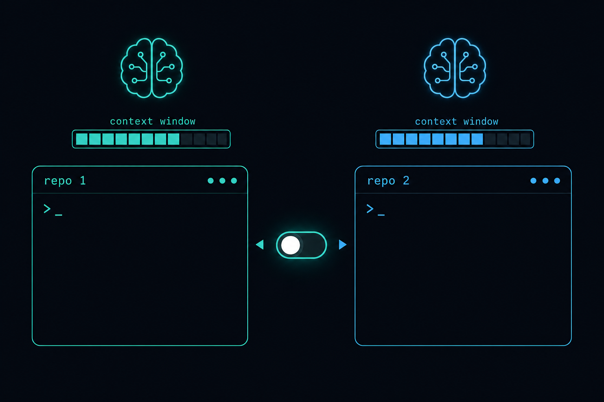
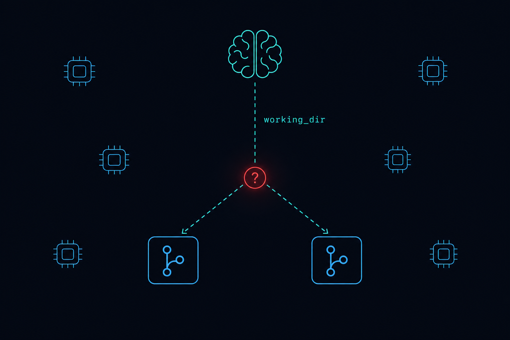
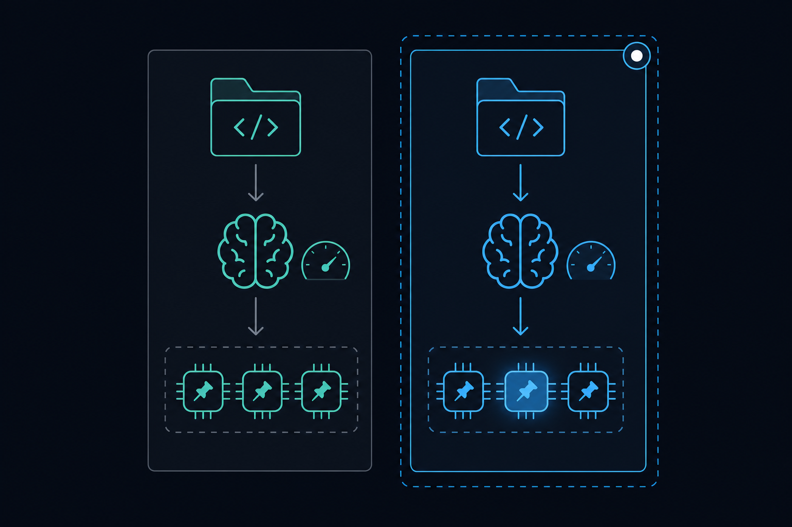
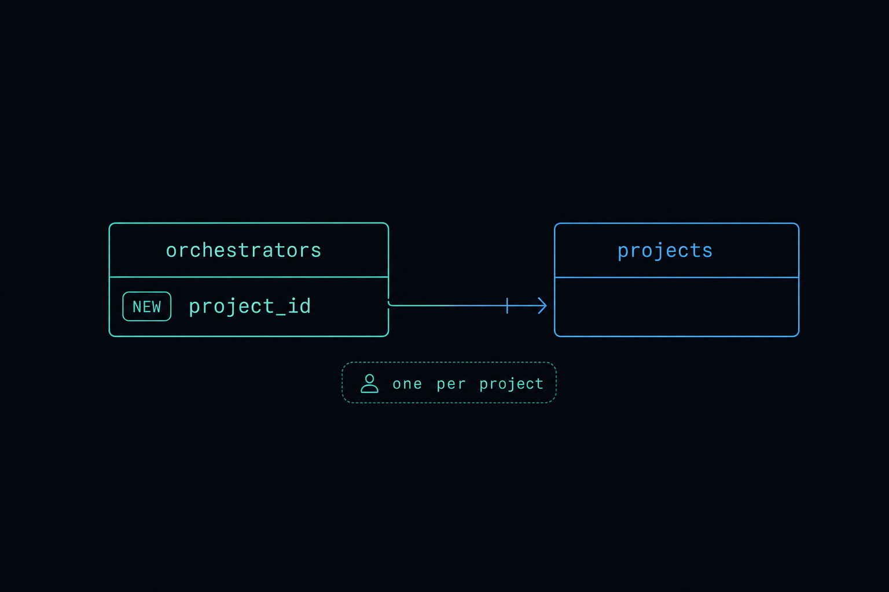
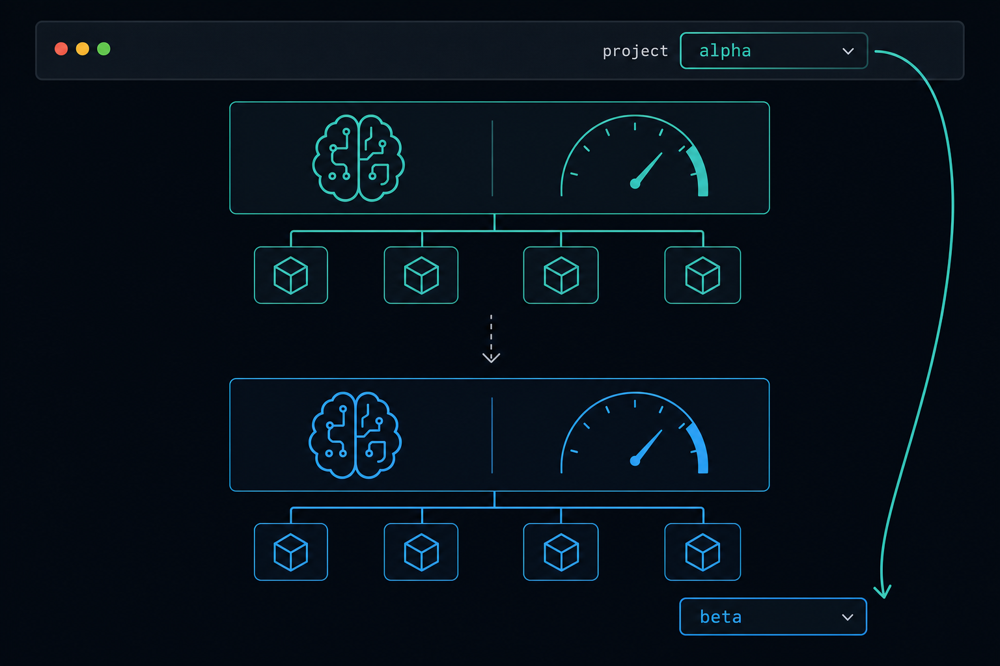
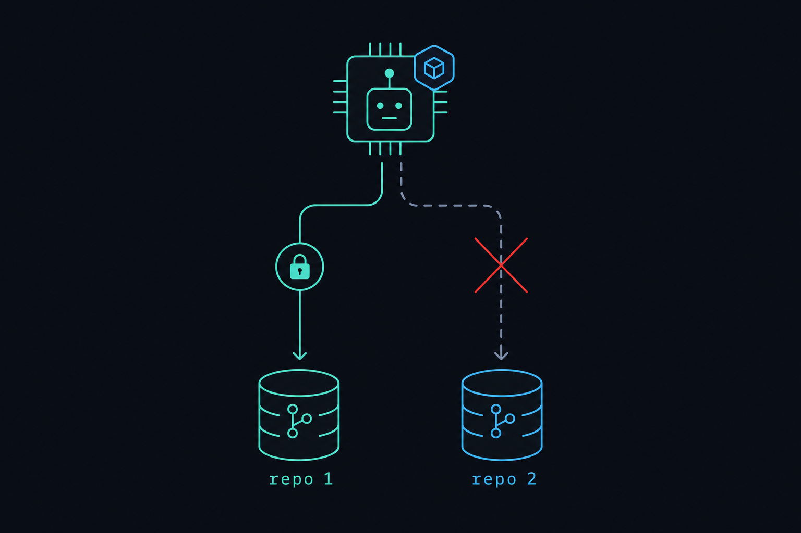
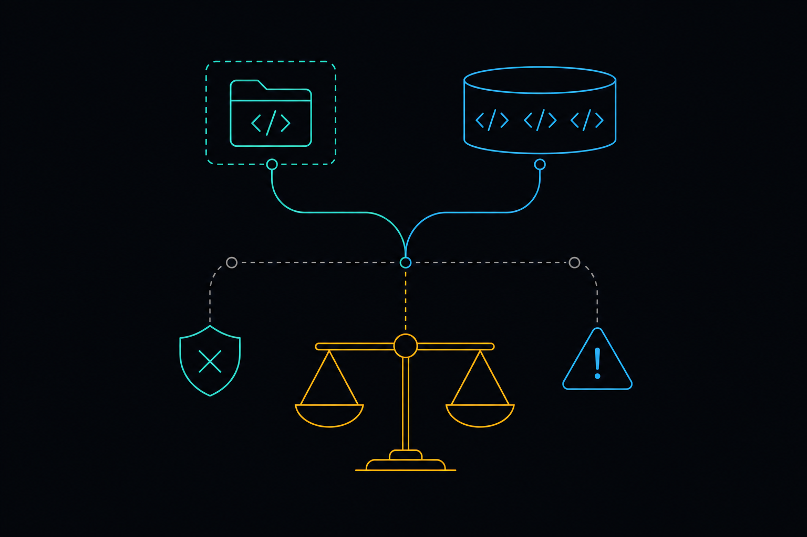
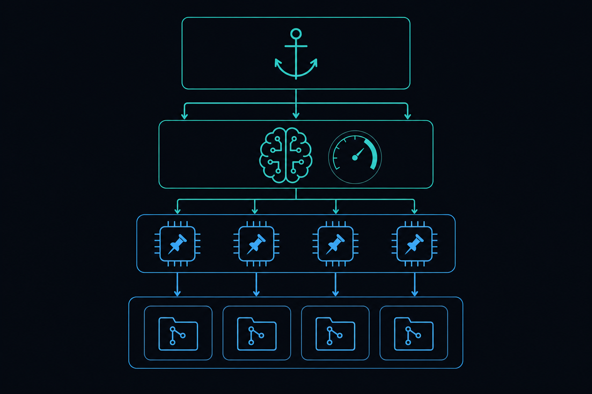

Orchestrator↔Project Binding & Pinned Workers
Make a target repo the unit of work: bind each orchestrator to a project, switch the active orchestrator when the operator switches projects in the console, give every orchestrator its own context window + project-aware system prompt, and pin the workers it spawns to that project so work can never silently land in the wrong repo.

Purpose
Today the platform has a single, global "default" orchestrator whose target
repo is a free-text working_dir string, and the workers it spawns carry
no repo binding at all. The operator wants the opposite: a target repo is a
first-class context. Specifically —
- Pin workers to a project so an agent created for repo A always runs in repo A and stays visible on repo A's roster.
- Allocate an orchestrator to a project, so switching projects in the console UI switches the active orchestrator as part of the same gesture.
- Each orchestrator maintains its own context window (independent resumable CLI session + token occupancy) and knows which project it is working on via its system prompt.
Problem
The binding model is "one orchestrator → one working_dir string," resolved
late and shared across everything. Three concrete defects make cross-repo work unsafe:
- Workers aren't pinned.
agents.project_idexists (lib/repo_builder/agents/agent.ex:44) andworker_changeset/2casts it, butAgents.create_worker/2(lib/repo_builder/agents.ex:124) never sets it. Orchestrator-spawned workers land withproject_id: niland vanish from the rail the moment a project is selected. - Dispatch cwd is late-bound to the orchestrator, not the worker.
command_agentresolvescwd: orchestrator_working_dir(orchestrator_id)on every call (lib/repo_builder/orchestrator/tools.ex:305,:1251). A worker "for repo A" has no memory of repo A; ifworking_dirchanges, the same worker drifts to repo B. - One shared orchestrator = one shared context.
ConsoleLivealways loads the singleton viaOrchestrators.get_or_create_default()(console_live.ex:274);handle_event("select_project", …)(console_live.ex:818) only re-scopes the roster — the orchestrator, its working_dir, its session, and its context window are untouched. All projects share one brain.
Net effect: the orchestrator can send work to the wrong repo, and there is no per-project memory or
context isolation. The schema primitives (agents.project_id, per-orchestrator
session_id/context_tokens) exist but are unused on these paths.

working_dir — workers float unattached and can drift to the wrong repo.Solution
Make the project the anchor. Add an explicit orchestrator.project_id
and an Orchestrators.get_or_create_for_project/1 resolver, so each project gets (and
reuses) its own orchestrator row — which already carries an independent
session_id (resumable CLI session) and context_tokens (window occupancy),
so per-project context isolation comes for free once more than one row exists. Binding sets
working_dir = project.root_path and resolves the system prompt's project from
project_id (not a cwd guess), so the orchestrator literally knows its repo.
Then wire the console project switch to re-select the active orchestrator (and its
topics/views), pin spawned workers to the commanding orchestrator's project, and
derive each worker's cwd from its own project — making "agent A → repo 1,
agent B → repo 2" correct by construction. A guard on start_adw's free-text
working_dir (the one LLM-chosen path) closes the last wrong-repo hole. The platform's
existing singleton remains the project_id: nil "All / platform" orchestrator — fully
back-compatible.

Relevant Files
Existing Files
- existing
lib/repo_builder/orchestrator/orchestrator.ex— orchestrator schema; add theproject_idfield + type + cast (currently hasworking_dir, no project, lines 54/78/107). - existing
lib/repo_builder/orchestrator.ex—RepoBuilder.Orchestratorscontext (only Repo caller). Addget_or_create_for_project/1+set_project/2; reuseapply_harness_defaults/2(94),set_working_dir/2(170),get_or_create_default/1(70). - existing
lib/repo_builder_web/live/console_live.ex— wire the switch:assign_orchestrator/1(274),assign_orchestrator_selection/2(287),subscribe_orchestrator_queue(389),handle_event("select_project", …)(818),load_agents/1(496), mount (79–269). - existing
lib/repo_builder/orchestrator/system_prompt.ex— resolve project fromorchestrator.project_idfirst:working_dir_block/1(161),project_primer_block/1(190),slash_commands_block/1(285). - existing
lib/repo_builder/orchestrator/tools.ex— pin + safe dispatch:create_agent(110),command_agent(279, cwd at 305),orchestrator_working_dir/1(1251),start_adw/adw_working_dir/2(476),spill_report/4(1369). - existing
lib/repo_builder/agents.ex—create_worker/2(124) setsproject_id;list_for_project/1(47),scope_by_project/2(39). - existing
lib/repo_builder/agents/agent.ex— already hasproject_id(44); confirm it's cast on the worker path. - existing
lib/repo_builder/orchestrator/server.ex— usesorchestrator.working_diras session cwd (205) andorchestrator.session_idfor resume (195); injects the system prompt (332). No change expected — verify per-orchestrator session/context isolation. - existing
lib/repo_builder/projects.ex—get_project/1(22),get_by_root_path/1(26),active_or_default/1(167),default_project/0(152). - existing
lib/repo_builder_web/components/project_components.ex—switcher/1(19); optionally surface the bound orchestrator (name/working_dir/context). - existing
priv/repo/migrations/20260623000001_create_projects_and_scope.exs— the precedent for theproject_idFK block (agents/workflow_runs, lines 59–68) to mirror for orchestrators. - existing
test/repo_builder_web/live/test_project_switcher_test.exs— current switch behavior (roster filter only); extend for the orchestrator swap.
New Files
- new
priv/repo/migrations/<ts>_add_project_id_to_orchestrators.exs— adds nullableproject_idFK (on_delete: :nilify_all) + index + partial-unique index (one orchestrator per project). - new
test/repo_builder/orchestrators_project_binding_test.exs—get_or_create_for_project/1idempotency, working_dir = root_path, distinct-from-default,set_project/2resets session. - new
test/repo_builder/orchestrator/system_prompt_project_test.exs— prompt names the bound project + root and includes its primer whenproject_idis set; back-compat cwd path when nil. - new
test/repo_builder_web/live/test_orchestrator_project_switch_test.exs— selecting a project switches the active orchestrator (id + working_dir change, topic re-subscribe); blank → platform default. - new
test/repo_builder/orchestrator/tools_worker_project_pin_test.exs— spawned workers inherit the orchestrator'sproject_id;command_agentcwd derives from the worker's project;start_adwrefuses an off-projectworking_dir.
Implementation Phases
IMPORTANT: Execute every phase and task step by step, in order, top to bottom.
Status markers: [] idle · [wip] in progress · [x] complete · [f] failed. All start as []; the Build Plan workflow updates them as it works.
[] Phase 1: Orchestrator gains a project binding (schema + context)
Give the orchestrator an explicit, durable link to a project, and a resolver that returns
(and reuses) one orchestrator per project. This is the foundation every other phase builds on.
The existing singleton stays as the project_id: nil platform orchestrator.

project_id FK on orchestrators; one orchestrator per project.1. Migration — add project_id to orchestrators
[]mix ecto.gen.migration add_project_id_to_orchestrators[]Mirror the agents block from20260623000001:add :project_id, references(:projects, type: :binary_id, on_delete: :nilify_all).[]create index(:orchestrators, [:project_id]).[]create unique_index(:orchestrators, [:project_id], where: "project_id IS NOT NULL", name: :orchestrators_project_id_unique)— enforce at most one orchestrator per project (NULLs unconstrained → many platform rows still allowed, but only one is named "default").[]mix ecto.migrate; confirm down-migration drops cleanly.
2. Schema — orchestrator.ex
[]Addfield :project_id, :binary_id(nullable;nil= the platform itself), mirroring the agent comment.[]Addproject_id: Ecto.UUID.t() | nilto@type t.[]Add:project_idto thecast/2list inchangeset/2. (Novalidate_required— it is optional.)
3. Context — RepoBuilder.Orchestrators
[]Add@spec get_or_create_for_project(Ecto.UUID.t()) :: Orchestrator.t(): fetch the row whereproject_id == id; if absent, create one withapply_harness_defaults/2, a deterministic uniquename(e.g."orch:" <> project.nameor"orch:" <> short_id— must satisfy theunique_constraint(:name)),project_id: id, andworking_dir: project.root_path.[]Add@spec set_project(Ecto.UUID.t(), Ecto.UUID.t() | nil) :: {:ok, t()} | {:error, Ecto.Changeset.t()}: setproject_id, deriveworking_dirfrom the project'sroot_path, and clearsession_id(mirrorsset_working_dir/2at line 170 — a new project ⇒ a fresh CLI session + context window).[]Keepget_or_create_default/1unchanged (theproject_id: nil"platform" orchestrator). Resolve theProjectfor binding viaProjects.get_project/1.[]Be defensive: a deleted project (nilify_all) leavesproject_id: nil→ the row behaves as a platform orchestrator. No crash.
4. Testing Strategy
ExUnit against the Orchestrators context with a fixture Project (DataCase, real Repo). Cover: first call creates + binds; second call for the same project returns the same row (idempotent); working_dir equals root_path; the per-project row is distinct from the default; set_project/2 nulls session_id; deleting the project nilifies the FK.
[]mix test test/repo_builder/orchestrators_project_binding_test.exs— binding + idempotency + session reset.[]mix ecto.migrate && mix ecto.rollback && mix ecto.migrate— migration up/down is clean.
[] Phase 2: The orchestrator knows its project (system prompt + context isolation)
Resolve the system-prompt project from the explicit orchestrator.project_id (falling
back to today's cwd lookup for the platform/unbound case), so the orchestrator is told its project
by name + root and gets the right primer and stack-correct slash commands. Per-orchestrator context
isolation already exists per row — verify it, no new code.
1. Resolve the project explicitly in system_prompt.ex
[]Add a privateresolve_project(orchestrator): whenproject_idis set,Projects.get_project(project_id); else the existingProjects.get_by_root_path(working_dir)(back-compat).[]Pointproject_primer_block/1(190) andslash_commands_block/1(285) atresolve_project/1instead of the cwd-only lookup.[]Haveworking_dir_block/1(161) name the bound project ("You are working on project <name> at <root_path>; you and every worker you command run there.") when a project is resolved; keep the existing "no working directory" copy otherwise.
2. Keep working_dir consistent with the binding
[]Confirm binding (Phase 1) setsworking_dir = project.root_path, soserver.ex:205(cwd: orchestrator.working_dir) and the prompt agree — no change toserver.ex.[]VerifySystemPrompt.build/1readsorchestrator.project_id(now present on the struct) without needing extra args.
3. Verify per-orchestrator context isolation (no code, observability)
[]Confirm each orchestrator row independently carriessession_id(resumable CLI session,server.ex:195/227) andcontext_tokens(overwritten per turn,orchestrator.ex:486) — so two project orchestrators have two separate context windows.[]Note in the moduledoc that switching project ⇒ a different orchestrator row ⇒ a separate window/cost, not a shared one.
4. Testing Strategy
Pure-ish unit test of SystemPrompt.build/1 with a project-bound orchestrator struct + a fixture project carrying a context_primer; assert the project name/root and primer appear, and that an unbound orchestrator falls back to the cwd path unchanged.
[]mix test test/repo_builder/orchestrator/system_prompt_project_test.exs— prompt names the bound project + includes its primer; nil-project back-compat holds.[]mix test test/repo_builder/orchestrator/system_prompt_test.exs test/repo_builder/orchestrator/system_prompt_primer_test.exs— no regression in existing prompt tests.
[] Phase 3: Switching the project switches the active orchestrator (Console UI)
Make the project switcher a first-class context switch: re-resolve the active orchestrator for the
selected project, re-point the orchestrator-scoped subscriptions/assigns, and reload the
project-scoped views (roster, chat history, cost/context badges). Selecting "All / platform"
returns to the project_id: nil default.

1. Orchestrator selection follows the active project
[]Refactorassign_orchestrator/1(274) to pick byactive_project_id:Orchestrators.get_or_create_for_project(id)when set, elseget_or_create_default().[]On mount (79–269), resolve the orchestrator afteractive_project_idis known so a deep-linked project starts on the right brain.
2. select_project performs the full context switch
[]Inhandle_event("select_project", …)(818): after settingactive_project_id, re-resolve the orchestrator and re-runassign_orchestrator_selection/2(287).[]Unsubscribe the previous orchestrator's topics and re-subscribe the new one (queue topic viasubscribe_orchestrator_queueat 389, plus its events/cost topics) — guard against double-subscribe.[]Reload orchestrator-scoped views for the new id: chat/log history, cost badge, context-window gauge, and the existingload_agents/1roster scope (496).[]Selecting blank ("") restores the platform default orchestrator + unscoped roster (today's behavior preserved).
3. Surface the bound orchestrator in the switcher (UX)
[]Inproject_components.exswitcher/1(19) or the orchestrator panel, show the active project's orchestrator name +working_dir+ context occupancy so the operator can see which brain is live.[]Micro-interaction: a subtle transition when the panel swaps (consistent with the console's existing styling) — no layout shift.
4. Testing Strategy
Phoenix.LiveViewTest (async: false, shared sandbox) extending the project-switcher test: assert that selecting a fixture project changes the active orchestrator (different id / working_dir reflected in a stable DOM id), that the roster re-scopes, and that blank returns to the default. Reference key element IDs, not raw HTML.
[]mix test test/repo_builder_web/live/test_orchestrator_project_switch_test.exs— switch changes the active orchestrator; blank → default.[]mix test test/repo_builder_web/live/test_project_switcher_test.exs— existing roster-scope behavior still passes.[]mix test test/repo_builder_web/live/test_orchestration_console_test.exs test/repo_builder_web/live/test_orchestrator_queue_test.exs— no console/queue regression from the re-subscribe.
[] Phase 4: Pin workers to the project + safe dispatch (kills the wrong-repo risk)
With the orchestrator bound to a project, every worker it spawns inherits that project, and each
worker's cwd derives from its own project — a worker can no longer drift. A
guard on start_adw's free-text working_dir (the only LLM-chosen path)
closes the last hole.

1. Pin spawned workers to the orchestrator's project
[]Thread the commanding orchestrator'sproject_idintoTools.create_agent(110) →Agents.create_worker/2(124) so the worker row is created with thatproject_id(currently always nil).[]Back-compat: a platform orchestrator (project_id: nil) still createsproject_id: nilworkers — unchanged.
2. Derive dispatch cwd from the worker's own project
[]Incommand_agent(279), resolvecwdfrom the worker'sproject_id→Projects.get_project/1.root_path, falling back toorchestrator_working_dir/1(1251) only when the worker is unscoped (back-compat). This makes the binding stable per-worker, not late-bound to the orchestrator.[]Keep worktree isolation intact: pass the project'sisolation_modethrough where the session honors it (consistent with the wizard fix).
3. Guard start_adw's free-text path
[]Inadw_working_dir/2(476): default the working_dir to the orchestrator's bound projectroot_pathwhen the LLM omits it.[]When the LLM does passworking_dir, require it to match a registeredProject.root_path(viaProjects.get_by_root_path/1) — ideally the orchestrator's own project; otherwise return an actionable{:error, …}("working_dir <path> is not the bound project / a registered project") instead of running. (Strictness is a questionable.)[]Tighten the system-prompt guidance (system_prompt.excross-repo section ~64–70) to say "command workers and ADWs against your project; pass another repo's path only if it is a registered project."
4. Testing Strategy
Unit/boundary tests at the Tools seam with a fixture project-bound orchestrator: a spawned worker carries the orchestrator's project_id; command_agent resolves cwd from the worker's project; start_adw with an off-project/unknown working_dir is refused and starts no session; the bound default path still works.
[]mix test test/repo_builder/orchestrator/tools_worker_project_pin_test.exs— pin + cwd-from-project + start_adw guard.[]mix test test/repo_builder/orchestrator/tools_test.exs test/repo_builder/orchestrator/start_adw_working_dir_test.exs test/repo_builder/orchestrator/adw_tools_test.exs— no regression in the existing tool/ADW suites.
[] Phase 5: Green gate + cross-cutting regression
Run the full typed-Elixir green gate and the surrounding suites that touch orchestrators, the console, agents, and projects. Fix every failure and new warning; do not weaken existing Dialyzer ignore filters.
1. Targeted regression
[]mix test test/repo_builder/orchestrator/ test/repo_builder/orchestrators_agent_models_test.exs test/repo_builder/agents_test.exs test/repo_builder/projects_test.exs— orchestrator/agent/project suites green.[]mix test test/repo_builder_web/live/— all LiveView/console tests green.
2. Testing Strategy — the five-command green gate
The project enforces a verbatim green gate; all five must pass with zero new warnings.
[]mix compile --warnings-as-errors— clean under the set-theoretic checker.[]mix format --check-formatted— formatting clean.[]mix credo --strict— lint +@specgate clean (every new public fn specced).[]mix test --warnings-as-errors— full suite green.[]mix dialyzer— no new contract warnings; existing ignore filters untouched.
Validation Commands
Execute these commands to validate the entire plan is complete:
[]mix test test/repo_builder/orchestrators_project_binding_test.exs— orchestrator↔project binding + idempotency + session reset.[]mix test test/repo_builder/orchestrator/system_prompt_project_test.exs— the prompt names the bound project + primer; nil-project back-compat.[]mix test test/repo_builder_web/live/test_orchestrator_project_switch_test.exs— UI project switch swaps the active orchestrator; blank → default.[]mix test test/repo_builder/orchestrator/tools_worker_project_pin_test.exs— workers pinned to project; cwd from worker project; off-projectstart_adwrefused.[]mix compile --warnings-as-errors— clean.[]mix format --check-formatted— clean.[]mix credo --strict— clean.[]mix test --warnings-as-errors— full suite green.[]mix dialyzer— no new warnings.
Questionables

One orchestrator per project, created lazily — is that the right cardinality?
Assumption: yes. get_or_create_for_project/1 lazily creates exactly one orchestrator per project (enforced by a partial-unique index), and the platform keeps its single project_id: nil default. This gives each project its own context window/cost "for free" via the existing per-row session_id/context_tokens. Alternative (a reusable pool re-pointed on switch) was rejected: it would force a session reset on every switch and lose per-project context continuity — the opposite of the ask.
How are per-project orchestrators named (the name unique constraint)?
Assumption: a deterministic, collision-free name like "orch:" <> project.name, falling back to "orch:" <> short_project_id if names can collide. The orchestrator name has a unique_constraint, so the resolver must guarantee uniqueness. Open: do we surface/allow renaming this in the UI, or keep it internal? Default: internal, display the project name in the UI.
How strict should the start_adw working_dir guard be?
Assumption (recommended): hard-refuse a working_dir that isn't a registered Project.root_path, defaulting to the orchestrator's own project when omitted. This is what directly kills the wrong-repo risk that motivated the feature. A softer option (warn-and-proceed) is available but leaves the hole open. Tightest option (only the orchestrator's own project) may be too restrictive for legitimate cross-repo ADWs — so the default is "any registered project, prefer own."
What happens to an in-flight run when the operator switches projects?
Assumption: nothing is killed. Each orchestrator is an independent session; switching only changes which orchestrator the console focuses. The previous project's orchestrator and its workers keep running and stream to their own topics; switching back reattaches. We do not interrupt sessions on switch.
Should existing unscoped workers / the current default be back-filled to a project?
Assumption: no migration of existing data. project_id: nil remains valid and means "platform" for both orchestrators and workers, preserving today's behavior. New work picks up the binding; old rows are untouched.
Worker cwd from the worker's project vs the commanding orchestrator's project?
Assumption: from the worker's own project_id (stable, drift-proof), falling back to the orchestrator's working_dir only when the worker is unscoped. Since spawned workers inherit the orchestrator's project (Phase 4.1), the two normally agree — but pinning to the worker is what guarantees a worker can never be re-routed.
Notes
Why this is mostly wiring, not new machinery
The hard parts already exist. Per-orchestrator context isolation is a property of the row:
each orchestrator carries its own resumable session_id and its own context_tokens
occupancy (orchestrator.ex:486, consumed at server.ex:195/205/332). The reason all
projects share one context today is simply that only one orchestrator row exists. Creating one per
project — the core of Phase 1 — yields independent context windows with no new runtime.
Back-compatibility contract
project_id: nilstays valid everywhere and means "the platform itself" — the existing default orchestrator and all current workers are unchanged.- The system prompt's cwd-based project resolution remains the fallback when
project_idis nil, so unbound orchestrators behave exactly as today. command_agentfalls back toorchestrator_working_dir/1for unscoped workers, so nothing regresses for platform work.
How this composes with shipped work
This builds directly on the agentic-layer adaptor (ai_docs/agentic-layer-adaptor.md) and the
recent planning-wizard target-repo launch fix (which threaded cwd/isolation_mode
through start_workflow → Runner → session). The same project-as-anchor principle now
reaches the orchestrator and its workers. Per-project budget caps already exist on
Project.budget_cap_usd and can later be wired to the per-project orchestrator's budget scope.
Risks & edges
- Topic leakage on switch: the console must unsubscribe the old orchestrator's PubSub topics before subscribing the new one's, or events from two brains interleave. Covered in Phase 3.2.
- Name collisions: the per-project orchestrator name must satisfy the unique constraint — use a deterministic, id-derived fallback.
- Deleted project:
on_delete: :nilify_alldowngrades the orchestrator to a platform orchestrator rather than orphaning it. - Session churn:
set_project/2clearssession_idintentionally (fresh context per project); make sure the UI doesn't treat that as an error.
Out of scope (future work)
- A first-class multi-project launch in the Planning-Mode Wizard (fan N orchestrators across N repos from one gesture).
- Extending the registered-project allowlist guard to every cwd path (worker + report spill at
tools.ex:1369), not juststart_adw. - Per-project orchestrator budget-cap enforcement from
Project.budget_cap_usd.

Amendments
No amendments yet — appended by the Update Plan / Update References workflows after first execution.